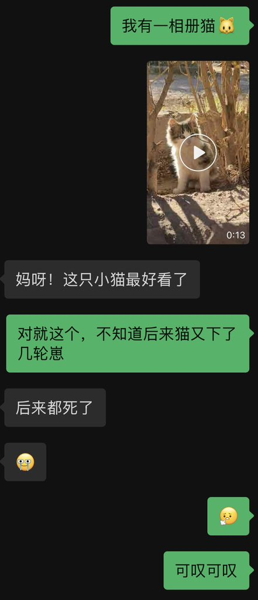

*⁂汐渋鈴蘭⁂*.･ﾟﾟ
@SupernovaLLan
啥比老中领导真欠图了把你老冯安压路机底下均匀涂抹于山路十八弯

*⁂汐渋鈴蘭⁂*.･ﾟﾟ
@SupernovaLLan
知道吗我非常恨那些驱猫打猫毒猫甚至开车压猫的狗屁领导，在海外看尽薄凉了。我给小猫大猫们搭了窝买来猫粮天天喂，他们某些人就对猫这样虐待……直到我离职离开那个伤心地，基地里面已经不剩几只猫了……年初当时的同事翻到我照片跟我聊起来天，我得到了这样不出意外的回答……但是想起来还是伤心 https://t.co/GRF9ZAslZ4 https://t.co/dguzeib2bo